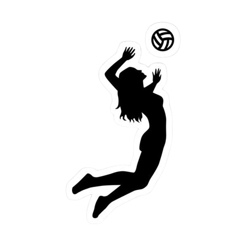
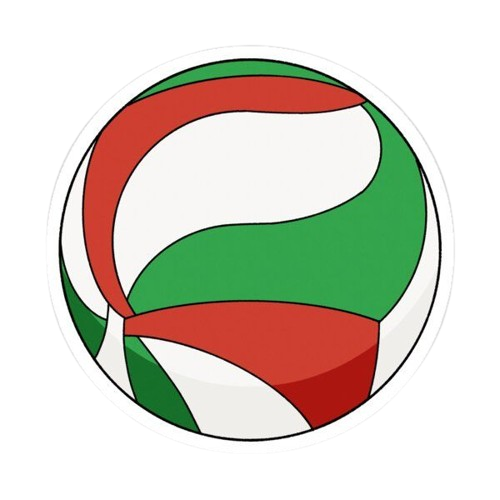
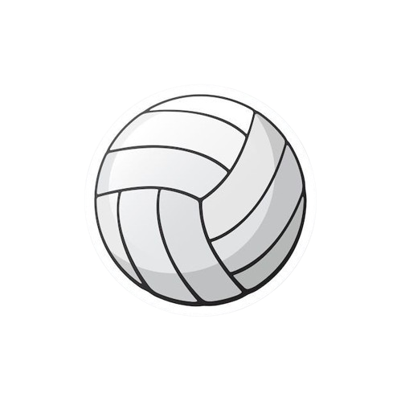
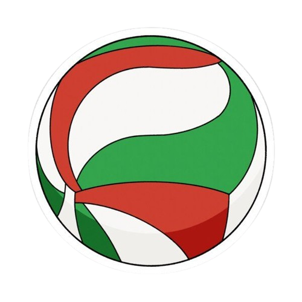
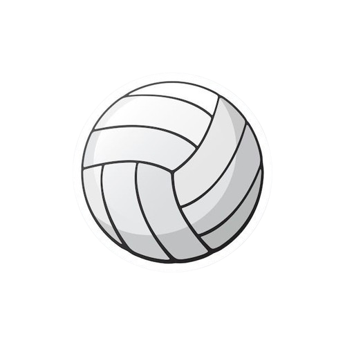

100 Reglas básicas
Hay más de 100 reglas en el voley, pero te dejo solo 100 para no entres a la cancha
desorientado (en
casode que juegas por primera vez. Si ya conoces el voley, esto igual te servirá para
refrescar la
memoria y más que seguro, conocer reglas nuevas).

Área de Juego
Dimensiones de la cancha: 18 metros de largo y 9 metros de
ancho.
Líneas de delimitación: 5 cm de ancho y se consideran dentro del
campo.
Línea central: Divide la cancha en dos mitades iguales.
Línea de ataque: Situada a 3 metros de la línea central.
Zona de servicio: Área de 9 metros de ancho detrás de cada línea
de
fondo.
Zona libre: Mínimo de 3 metros alrededor de la cancha, libre de
obstáculos.
Zona de sustitución: Área entre la línea de ataque y la línea de
fondo.
Zona de calentamiento: 3 metros por 3 metros, ubicada fuera de
la
zona libre.
Zona de castigo: 1 metro por 1 metro, ubicada cerca de la mesa
del
anotador.
Red y Balón
Altura de la red para hombres: 2.43 metros.
Altura de la red para mujeres: 2.24 metros.
Ancho de la red: 1 metro.
Largo de la red: 9.5 a 10 metros.
Postes de la red: Altura de 2.55 metros, situados a 0.5-1 metro
fuera de las líneas laterales.
Balón: Circunferencia de 65-67 cm y peso de 260-280 gramos.
Presión del balón: 0.30 a 0.325 kg/cm².
Composición de los Equipos
Jugadores en la cancha: 6 por equipo.
Número total de jugadores: Hasta 12 jugadores por equipo en
competiciones oficiales.
Capitán del equipo: Uno de los jugadores debe ser designado
capitán.
Líbero: Un especialista en defensa, no puede atacar desde
delante de
la línea de ataque ni
servir.
Uniformes: Todos los jugadores deben usar uniformes idénticos,
excepto el líbero.
Número del jugador: Del 1 al 20, impreso en el uniforme.
Formato del Juego
Duración del partido: Al mejor de cinco sets.
Puntuación de sets: Los primeros cuatro sets se juegan a 25
puntos,
y el quinto set a 15 puntos.
Diferencia de puntos: Un equipo debe ganar un set con una
diferencia
mínima de 2 puntos.
Cambio de lado: Los equipos cambian de lado al finalizar cada
set.
Tiempo de descanso: 3 minutos entre sets.
Tiempo muerto técnico: Dos tiempos muertos técnicos de 60
segundos
en los sets 1 a 4 cuando un
equipo
alcanza los 8 y 16 puntos.
Tiempo muerto: Dos tiempos muertos de 30 segundos por equipo en
cada
set.
Servicio
Orden de servicio: Los jugadores deben servir en el orden de
rotación.
Área de servicio: Debe realizarse detrás de la línea de fondo y
dentro de la zona de servicio.
Límite de tiempo: El jugador tiene 8 segundos para realizar el
servicio después del silbato del
árbitro.
Posición del servicio: El servicio debe ejecutarse con el
balón
en movimiento y sin dejarlo
caer.
Faltas en el servicio: Incluir pisar la línea de fondo, no
cruzar la red o enviar el balón fuera
de los
límites.
Juego con el Balón
Toques permitidos: Un equipo puede tocar el balón hasta tres
veces
antes de devolverlo.
Toques consecutivos: Un jugador no puede tocar el balón dos
veces
seguidas.
Golpe de ataque: Solo los jugadores en la primera línea pueden
atacar el balón desde delante de
la línea
de ataque.
Paso bajo la red: Los jugadores no pueden pasar completamente
debajo
de la red.
Balón en juego: El balón está en juego desde el momento del
servicio
hasta que el árbitro pita
una
falta.
Balón dentro: Si toca la línea de delimitación.
Balón fuera: Si toca el suelo fuera de las líneas de
delimitación,
el techo o cualquier objeto
fuera de
la cancha.
Toque ilegal: Retener, lanzar o golpear el balón con una parte
del
cuerpo distinta a la mano o
el brazo.
Bloqueo
Bloqueo: Se considera un toque del equipo y no cuenta para los
tres
toques permitidos.
Bloqueo del servicio: No está permitido bloquear el servicio del
equipo contrario.
Bloqueo ofensivo: Los jugadores delanteros pueden bloquear el
balón
que viene del ataque
contrario.
Bloqueo defensivo: Los jugadores pueden bloquear el balón para
evitar que pase la red.
Toque después del bloqueo: El equipo puede tocar el balón tres
veces
más después de un bloqueo.
Faltas y Sanciones
Faltas de rotación: Ocurren si los jugadores no siguen el orden
de
rotación correcto.
Toques ilegales: Incluyen retener el balón, dobles golpes y
golpes
con cualquier parte del
cuerpo que no
sea la mano o el brazo.
Contacto con la red: Los jugadores no pueden tocar la red
durante el
juego.
Invasión del campo contrario: No se permite invadir el campo
contrario ni por debajo ni por
encima de la
red.
Conducta antideportiva: Se sanciona con advertencias, tarjetas
amarillas o rojas.
Retraso del juego: Cualquier acción que retrase
intencionalmente el
juego puede ser sancionada.
Sanciones por conducta: Amonestación, penalización, expulsión y
descalificación.
Tarjeta amarilla: Advertencia por conducta inapropiada.
Tarjeta roja: Pérdida de punto o servicio.
Tarjetas combinadas (roja y amarilla): Expulsión del jugador
para el
set.
Tarjeta roja y amarilla en la misma mano: Descalificación del
jugador para el partido.
Interrupciones y Sanciones
Tiempos muertos: Cada equipo tiene dos tiempos muertos de 30
segundos por set.
Sustituciones: Un equipo puede realizar un máximo de seis
sustituciones por set.
Sustitución excepcional: Permitida si un jugador lesionado no
puede
continuar y no hay
sustituciones
disponibles.
Reanudación del juego: Después de un tiempo muerto o
sustitución, el
juego se reanuda con el
servicio.
Cambio de balón: Permitido solo si el balón está dañado.
Interrupciones no permitidas: Solo el capitán puede solicitar
aclaraciones al árbitro.
Conducta antideportiva del público: Puede llevar a la suspensión
del
partido.
Oficiales y sus Deberes
Árbitros: Un primer y un segundo árbitro, un anotador y jueces
de
línea.
Primer árbitro: Tiene autoridad total sobre el partido.
Segundo árbitro: Asiste al primer árbitro y supervisa la zona de
sustitución.
Anotador: Lleva el control del marcador y las sustituciones.
Jueces de línea: Supervisan las líneas de delimitación y ayudan
en
la toma de decisiones.
Protestas: Solo el capitán puede protestar decisiones del
árbitro,
de manera respetuosa.
Decisiones del árbitro: Son definitivas y no se pueden discutir.
Reglas Especiales
Toques accidentales con el cuerpo: Permitidos, excepto cuando el
balón se detiene.
Ataque desde la línea de ataque: Solo permitido a jugadores de
la
primera línea.
Golpe por debajo del nivel de la red: Permitido siempre que no
haya
invasión del campo
contrario.
Toques sucesivos en el bloqueo: Permitidos siempre que sean en
la
misma acción.
Ataque con el pie: Permitido siempre que no sea una acción de
retención.
Conducta Deportiva
Conducta del equipo: Los jugadores deben comportarse de manera
respetuosa y deportiva.
Conducta del entrenador: Debe dirigir a su equipo de manera
positiva
y respetuosa.
Conducta del público: El público debe respetar a los jugadores y
oficiales.
Reglamento Adicional
Equipamiento adicional: Los jugadores pueden usar rodilleras,
tobilleras y gafas protectoras.
Uniformidad: Los equipos deben tener uniformes de colores
contrastantes.
Entrenador asistente: Puede asistir al entrenador principal pero
no
intervenir directamente en
el juego.
Capitán en la cancha: Responsable de la conducta del equipo y
comunicación con los árbitros.
Procedimientos de calentamiento: Deben realizarse en las zonas
designadas antes del partido.
Cambio de balón en caso de daño: Solo el primer árbitro puede
autorizar el cambio.
Procedimientos de Partida
Inicio del partido: Decidido por sorteo, el equipo ganador elige
servicio o lado de la cancha.
Posición de inicio: Los jugadores deben estar en sus posiciones
correctas al inicio del
servicio.
Rotación después del servicio: Después de ganar el servicio, el
equipo rota una posición en el
sentido
de las agujas del reloj.
Fin del partido: Se considera terminado cuando un equipo gana el
número requerido de sets.
Reglamento de Seguridad
Seguridad en la cancha: No debe haber objetos peligrosos en el
área
de juego.
Seguridad del equipo: Los jugadores deben usar equipo adecuado
para
evitar lesiones.
Primeros auxilios: Debe haber disponibilidad de primeros
auxilios y
personal médico durante el
partido.
Reglas de Competencia
Torneo de round-robin: Cada equipo juega contra todos los demás
equipos.
Torneo de eliminación: Los equipos juegan hasta que solo quede
un
equipo invicto.
Criterios de desempate: Sets ganados, diferencia de puntos,
puntos
ganados en enfrentamientos
directos.
Reglas de Publicidad
Uniformes con publicidad: Permitidos siempre que cumplan con las
regulaciones de la FIVB.
Publicidad en la cancha: Debe estar ubicada de manera que no
interfiera con el juego.
Reglas de Entrenamiento
Entrenamientos oficiales: Deben ser realizados en las canchas
designadas antes de los partidos.
Entrenamiento de árbitros: Los árbitros deben recibir
entrenamiento
continuo para mantenerse
actualizados con las reglas.
.png) 


